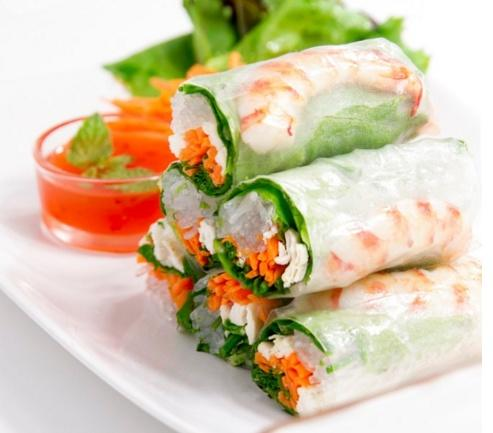

Welcome to Recetas de comida rapida
Comidas rápidas para cuando no sabes qué recetas cocinar
2021.12.16 15:47Inicio Descarga Recetas Desayunos Comidas Ensaladas Pasta Carnes y Aves Pescados y Mariscos Guarniciones Cenas Postres Bebidas Te recomendamos Saludable Recetas Pollo Pays de Queso Menús Caseros Recetas con huevo Gelatinas Tips de cocina Salud y Nutrición Recetarios Inicio Inicio Descarga Recetas Desayunos Comidas Ensaladas Pasta Carnes y Aves Pescados y Mariscos Guarniciones Cenas Postres Bebidas Te recomendamos Saludable Recetas Pollo Pays de Queso Menús Caseros Recetas con huevo Gelatinas Tips de cocina Salud y Nutrición Recetarios Inicio
Las Recetas de Comida y Cocina Fáciles, de toda la vida.
Inicio Recetas de Cocina Comidas rápidas para cuando no tengas inspiración en la cocina Recetas de CocinaComidas rápidas para cuando no tengas inspiración en la cocina
Por Josselin Melara marzo 10, 2021 0 Comenta
Califica este contenido!
Enviar voto
Promedio 4 / 5. Votos: 197
Las comidas rápidas nos salvan cuando no sabemos qué recetas cocinar y tenemos mucha prisa. Checa estas opciones y ¡disfrútalas!
Estas comidas rápidas muestran qué recetas cocinar en esos días en que no contamos mucho tiempo, checa estas opciones. No tardarás mucho en la cocina y comerás delicioso y nutritivo.
Son recetas muy fáciles, ricas y con el toque saludable que a ti te encanta. ¡Comerás algo delicioso sin gastar tiempo!
Te puede interesar: ¿Tienes hambre todo el tiempo? Puede que tu apetito te esté engañando
¿Qué te parece esta riquísima receta de temporada para hacer rapidito? Te compartimos el video:
Si quieres comidas rápidas checa estos tips para ahorrar tiempo a la hora de cocinar
El tiempo es oro y en la cocina también. Por eso te compartimos estos útiles tips para que ahorrar minutos y disfrutar de forma más rápida algo delicioso:
No peles las frutas y verduras cuya cáscara sea comestible. Estas también tienen nutrientes que puedes aprovechar. Aprovecha las sobras de las comidas pasadas para crear otros platillos. Ten a la mano siempre la receta que vayas a cocinar. Lo mejor es que hagas un plan semanal para que tengas listos los ingredientes que vas a preparar. Deja descongelando las carnes una noche antes. Siempre cuenta con ingredientes que se cocinan rápido, tales como huevo , filetes y champiñones . Hay deliciosas recetas especiales para horno de microonda s que te pueden sacar del apuro.Puedes leer: ¡Sabor para los días tope! 2 recetas rápidas y saludables
Una opción rica que puedes preparar para cuidarte es este sándwich saludable estilo vietnamita. ¡Sigue la receta!
Puedes leer: El ABC de la dieta mediterránea: alimentos, beneficios y recetas deliciosas
Además de saber qué comer, también lo es hacerlo si prisas
Siempre se nos ha dicho que debemos masticar despacio , y va más allá de tener modales. Aquí te damos las razones por las cuales debes evitar comer a prisa:
Las personas que comen lentamente tienen menos probabilidad de sufrir obesidad y el incremento de la circunferencia de la cintura. También incrementa el riesgo de desarrollar el síndrome metabólico, un conjunto de condiciones que pueden ocasionar enfermedades cardiacas, accidentes cerebrovasculares y diabetes tipo 2. Al comer rápido , es más posible que aumente el nivel de glucosa en la sangre. El cerebro tarda en reconocer que estamos satisfechos aproximadamente 20 minutos. Si comes rápido, la señal de que comiste suficiente llegará tarde, provocando que comas de más.Es importante que mastiques los alimentos entre cinco y diez veces más de lo que sueles hacerlo con normalidad. No estamos acostumbrando a masticar lo necesario.
Para asegurar una digestión correcta, de preferencia come sentado.
Mucho ojo : puede que no tengas mucho tiempo para cocinar, ¡pero siempre debes darte tiempo para comer!
Aplica estas formas de hacer más saludable el desayuno para niños
Recetas de comidas rápidas para cocinar
Ver Recetas:
Receta de tortitas de calabaza
¡Esta delicia te va a encantar! Te enseñamos a preparar esta receta de tortitas de calabaza, tan fáciles que las puedes hacer hoy mismo.
Ensalada de col con salchicha argentina
Prepara una sorpresa deliciosa y balanceada a la hora de la comida. Sigue esta receta de ensalada de col con salchicha argentina.
Tostadas de atún con mayonesa y verduras
Sácale provecho a esta atun de lata recetas de tostadas con mayonesa y verduras para toda a familia. ¡Prepáralas hoy mismo!
Receta de rollos de carne de pollo con lechuga
Disfruta de una cena ligera preparando esta receta de rollos de carne de pollo con lechuga. La disfrutarás mucho.
Sándwich saludable estilo vietnamita
Una opción rica que puedes preparar para cuidarte es este sándwich saludable estilo vietnamita. ¡Sigue la receta!
Crema de cilantro receta fácil y rápida de preparar
Esta receta de crema de cilantro sin duda alguna debe estar dentro de tus platillos clásicos, es perfecta para cualquier ocasión.
Riquísimos huaraches de chuleta de cerdo con nopales
Ahora que se acercan las fiestas patrias, estos riquísimos huaraches de chuleta de cerdo con nopales son ideales para celebrar.
Aguacates rellenos de queso
Esta opción resulta en una ensalada fresca y práctica para disfrutar a la hora que quieras.
Tacos de alambre de bistec con chicharrón
Disfruta de un delicioso taco de alambre de bistec con chicharrón. No olvides acompañar está receta con tu salsa favorita.
Cómo preparar filete de pescado a la mostaza
¡Qué delicia! Te enseñamos como preparar filete de pescado a la mostaza. Se convertirá en uno de tus favoritos por lo rico y fácil que es de hacer.
Cocina fácil comidas rápidas qué comer recetas recetas fáciles 0 Comenta 0 Facebook Twitter Google + Pinterest Anterior9 recetas de pastel de zanahoria para disfrutar al máximo este delicioso postre
SiguienteBeneficios del té de canela que debes conocer y aprovechar
Estas Recetas te Encantarán
Beneficios de la cebada y 10 deliciosas recetas
noviembre 13, 2019Deliciosa combinación de fajitas de pollo con manzana
abril 8, 2021Aprende a preparar té de bugambilia y conoce
noviembre 29, 20216 recetas de tapas españolas que te gustará
junio 14, 2018Curiosidades sobre la comida argentina y sus platillos
julio 9, 2021Prueba la comida tipica de Nuevo León: 6
septiembre 14, 20208 recetas con todo el sabor del chile
agosto 21, 2020Recetas de ensalada con pollo que te encantara
octubre 2, 2019Los 20 postres con fresas más irresistibles
julio 23, 2019Receta de pan de muerto relleno con conejito
octubre 25, 2021Lo más leído
130 Cenas navideñas y de fin de año que recordarás por siempre
233 recetas para una Navidad llena de magia y sabor
330 ensaladas saludables para cada día del mes
425 guarniciones navideñas para hacer tu cena más especial
5Recetas con carne de res: las 25 más deliciosas
Facebook Twitter Instagram YoutubeEDITORIAL TELEVISA S.A. DE C.V. TODOS LOS DERECHOS RESERVADOS. TBG - EDITORIAL TELEVISA - LIFESTYLES - FOOD
Regresar al inicio Este sitio utiliza cookies para ayudarnos a mejorar tu experiencia cada vez que lo visites. Al continuar navegando en él, estarás aceptando su uso. Podrás deshabilitarlas accediendo a la configuración de tu navegador. Leer Más Acepto Privacy & Cookies Policy
Privacy Overview
This website uses cookies to improve your experience while you navigate through the website. Out of these cookies, the cookies that are categorized as necessary are stored on your browser as they are as essential for the working of basic functionalities of the website. We also use third-party cookies that help us analyze and understand how you use this website. These cookies will be stored in your browser only with your consent. You also have the option to opt-out of these cookies. But opting out of some of these cookies may have an effect on your browsing experience.
Privacy OverviewThis website uses cookies to improve your experience while you navigate through the website. Out of these cookies, the cookies that are categorized as necessary are stored on your browser as they are as essential for the working of basic functionalities of the website. We also use third-party cookies that help us analyze and understand how you use this website. These cookies will be stored in your browser only with your consent. You also have the option to opt-out of these cookies. But opting out of some of these cookies may have an effect on your browsing experience.
necessary Always EnabledNecessary cookies are absolutely essential for the website to function properly. This category only includes cookies that ensures basic functionalities and security features of the website. These cookies do not store any personal information.
non-necessaryAny cookies that may not be particularly necessary for the website to function and is used specifically to collect user personal data via analytics, ads, other embedded contents are termed as non-necessary cookies. It is mandatory to procure user consent prior to running these cookies on your website.
